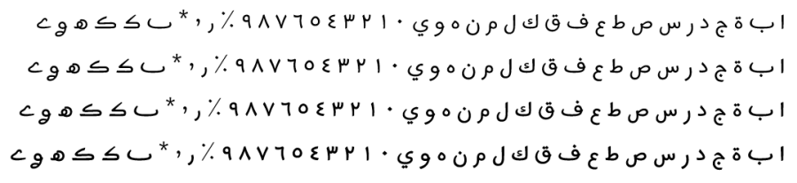

Harmattan - Design
The original font on which Harmattan was based was an OFL-licensed typeface called Fouta AS, designed for one specific region in West Africa. However, significant design changes have been made as the font has been extended to handle a wider variety of languages using the Arabic script. Harmattan, named after the trade winds that blow during the dry season in West Africa, is designed in a Warsh style to suit the needs of languages using the Arabic script in West Africa. The Latin letters are a subset of the Andika font.
Four fonts from this typeface family are included in the Harmattan release:
- Harmattan Regular
- Harmattan Medium
- Harmattan SemiBold
- Harmattan Bold
Type Samples
Type samples showing some of the inventory of glyphs can be found here: Harmattan Type Sample.
Examples of some text is shown below.
Character Set
For a complete list of characters included in this font, see Character Set Support.
Font Features
Alternate glyphs that are available through features are demonstrated in the Features document.